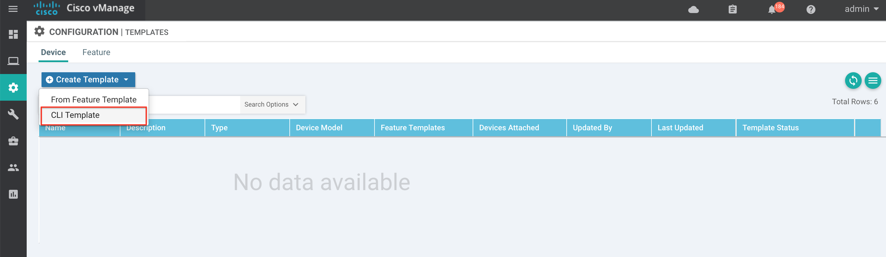
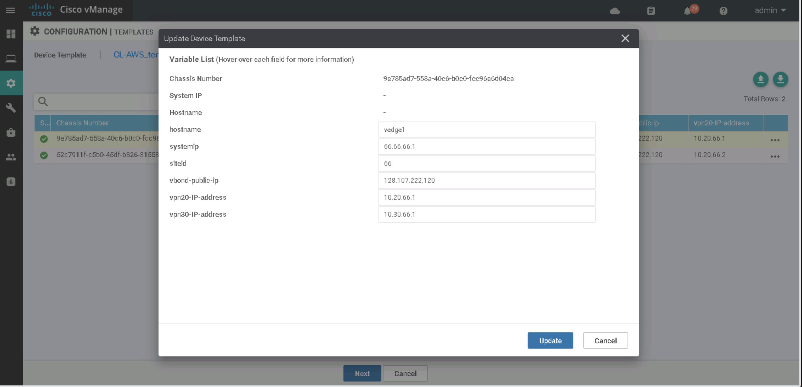
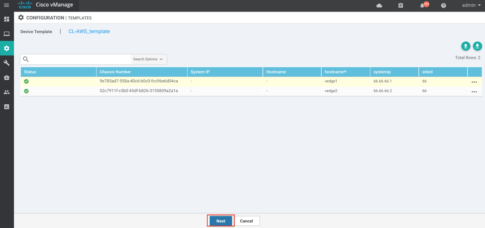
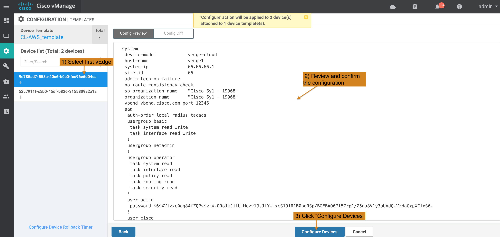
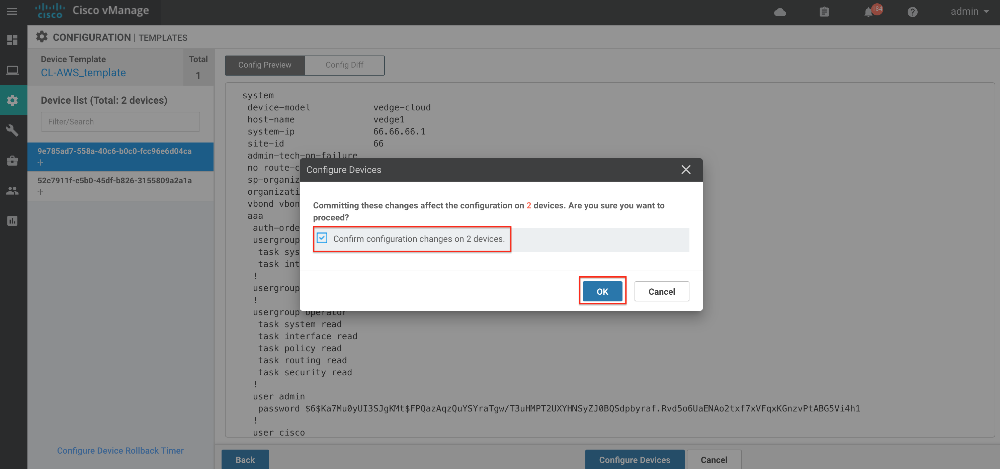

Task 7a - Add and Attach AWS Template for vEdge Cloud Devices
In this task we will add and then attach AWS template for at least two (2) available vEdge devices to configure Cloud onRamp for IaaS.
Step 1: Add AWS Template for vEdge Cloud Devices
-
Log on the vManage from a web browser (if not already open) and use credentials of
adminandadmin:https://198.18.1.10Note: If admin/admincredentials do not work then you may try usingcisco/ciscoorcisco1/cisco1In order to add AWS Template; a CLI Template will be added so configurations of vEdge Cloud in AWS will be done via vManage directly. Use of "Feature Templates" on vManage is an alternate mechanism for centralization configurations from vManage, but it will not be used in this lab.
Important Note: Be very careful in making configuration changes on vEdge. Do NOT change any configuration of VPN 512 as it can result in loss of connectivity to the vEdge - which can not be restored. You will have to start the lab again from Task #1 if you loose network connectivity to a vEdge. -
On the vManage GUI, navigate to Configuration > Templates. Under Device tab click Create Template and then select
CLI Templateas shown in the below screenshot:
-
Next, from the Device Model dropdown menu select
vEdge-Cloud - Enter Template Name of
CL-AWS_template - Enter Description of
vEdge AWS Template - In the CLI Configuration section copy and paste the below configs:
system
host-name {{hostname}}
system-ip {{systemip}}
site-id {{siteid}}
sp-organization-name "Cisco Sy1 - 19968"
organization-name "Cisco Sy1 - 19968"
vbond vbond.cisco.com
aaa
auth-order local radius tacacs
usergroup basic
task system read write
task interface read write
!
usergroup netadmin
!
usergroup operator
task system read
task interface read
task policy read
task routing read
task security read
!
user admin
password admin
!
user cisco
password cisco
description cisco
group netadmin
!
!
banner
login "Cisco Live SD-WAN - AWS"
!
omp
no shutdown
ecmp-limit 8
graceful-restart
advertise connected
advertise static
!
vpn 0
host vbond.cisco.com ip {{vbond-public-ip}}
interface ge0/0
ip dhcp-client
tunnel-interface
encapsulation ipsec
color public-internet
no allow-service bgp
allow-service dhcp
allow-service dns
allow-service icmp
allow-service sshd
no allow-service netconf
allow-service ntp
no allow-service ospf
allow-service stun
!
no shutdown
!
!
vpn 512
interface eth0
ip dhcp-client
no shutdown
!
!
vpn 10
interface loopback0
ip address 1.1.1.1/32
no shutdown
!
!
vpn 20
name BusinessVPN
interface loopback20
ip address {{vpn20-IP-address}}/32
no shutdown
!
vpn 30
name MarketingVPN
interface loopback30
ip address {{vpn30-IP-address}}/32
no shutdown
!
!
!
| Note: |
|---|
Double curly brackets with {{vbond-public-ip}} must be entered as above. Double curly brackets are interpreted as a variable by vManage and the appropriate IP address of vbond for your pod must be configured in subsequent bullets |
-
Next Click
Addas shown in the below screenshot:
-
On the screen, verify that this Template has been added successfully
Step 2: Attach AWS Template for vEdge Cloud Devices
Now let's attach two (2) vEdge Cloud devices to this newly created CLI Template.
- On the vManage GUI, navigate to Configuration > Devices. Under WAN Edge List tab make sure there are at least two (2) vEdge Cloud devices available to be used.

-
On the vManage GUI, Configuration > Templates section:
-
Click on the newly created Template named:
CL-AWS_Template -
Then Click the three dots
...on the right side of this Template and SelectAttach Devicesoption from the drop down menu as shown in the below screenshot:
-
Pre-requisite: If CL-AWS_Template is not listed in the Templates GUI, then please complete Step 1 first.

- On the Attach Devices window:
- Under the Available Devices tab, Click on two (2) available uuid. Select
uuid:9e785ad7-558a-40c6-b0c0-fcc96e6d04caanduuid:52c7911f-c5b0-45df-b826-3155809a2a1a - Click on the
Right Arrow iconas shown in below screenshot. At this point the vEdges should be moved to the Selected Devices tab. - Click on the
Attachbutton as shown in below screenshot.
- Under the Available Devices tab, Click on two (2) available uuid. Select

-
On the next screen, Select the first vEdge. You can select
uuid:9e785ad7-558a-40c6-b0c0-fcc96e6d04caasvEdge1anduuid:52c7911f-c5b0-45df-b826-3155809a2a1aasvEdge2. -
Click the three dots
...on the right side of this vEdge and SelectEdit Device Templateoption from the drop down menu as shown in the below screenshot:

- Next, from the Update Device Template menu
- Enter hostname of
vedge1 - Enter systemip of
66.66.66.1 - Enter siteid of
66 - Enter provided vbond-public-ip
- Enter vpn20-IP-address of
10.20.66.1 - Enter vpn30-IP-address of
10.30.66.1 - Click on the
Updatebutton
- Enter hostname of

-
Select the second vEdge and Click the three dots
...on the right side of this vEdge and SelectEdit Device Templateoption from the drop down menu. -
Next, from the Update Device Template menu
- Enter hostname of
vedge2 - Enter systemip of
66.66.66.2 - Enter siteid of
66 - Enter provided vbond-public-ip
- Enter vpn20-IP-address of
10.20.66.2 - Enter vpn30-IP-address of
10.30.66.2 - Click on the
Updatebutton
- Enter hostname of
-
Once both vEdges are updated Click on
Nextas shown in the below screenshot:

- On the next screen, Click on first vEdge on left section and Click on
Config PreviewandConfig Diffoptions on the right side of window to review and confirm correct configurations are pushed to this vEdge Cloud.

- Do the same for second vEdge as shown below.

- CLick
Configure Devicesand SelectConfirm configuration changes on 2 deviceson Configure Devices pop-up window and then ClickOK.

- Once device configurations are completed, on the subsequent screen verify that the template is attached successfully to vEdge Cloud Devices.

This concludes the process to add and attach AWS Template for vEdge Cloud Devices using vManage.